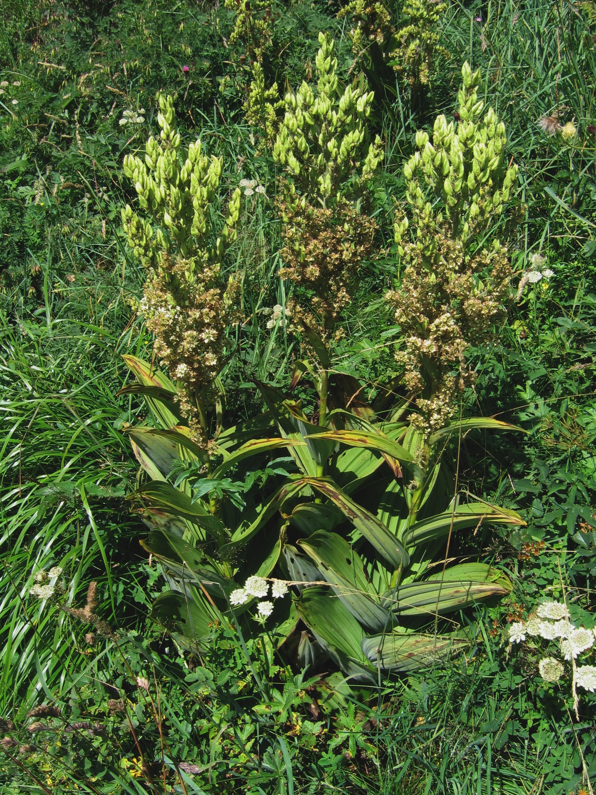

Plante la plus dangereuse d’Europe, 3cm de n’importe quel morceau de la plante contient la dose pour tuer un adulte. Se trouve dans les sillons humides.

Autre variété d’aconit, aussi dangereuse.
Ce petit arbuste tapissant colonise les sous-bois et les landes d'altitude. Ses fruits, cueillis à la main en été, sont un rendez-vous traditionnel.
Buisson couvert de fleurs jaune vif au printemps, ses rameaux souples ont longtemps été utilisés pour fabriquer des balais.